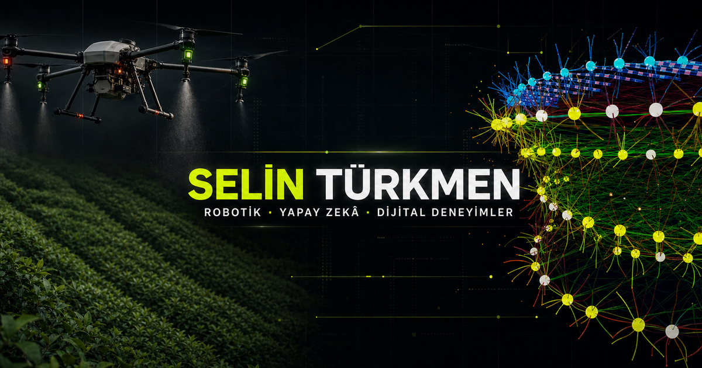

Tarımsal Otonom Robot Simülasyonu
TÜBİTAK
ROS2
Gazebo

Robotik × Yapay zekâ × Dijital ürün
Yazılım mühendisliği ve yönetim bilişim sistemleri perspektifini; robotik, web ve siber güvenlik projelerinde teknik olarak sağlam, görsel olarak hatırlanan deneyimlere dönüştürüyorum.
TÜBİTAK
ROS2
Gazebo
23 seçili proje · 02 TÜBİTAK çalışması
2024 — 2026
TÜBİTAK / ROS2 / Gazebo
Web / Veri / Büyüme
Mobil / Ürün Deneyimi
Web / Hizmet Tasarımı
TÜBİTAK / Yapay Zekâ / 3B Simülasyon
Özgün Üretim / Drone / Tarım
Eğitim Teknolojisi / Kişisel Planlama / Web
Kesici takımlarda yeni nesil performans
B2B E-Ticaret / Ürün Kataloğu / Web
Tarım Teknolojileri / Yapay Zekâ / Otonom Sistem
Etkileşimli Web / Oyunlaştırma / Kişiselleştirme
Oynanabilir Demo / Oyun Tasarımı / Tarihî 4X
Mobil Ticaret / E-Ticaret / Ürün Deneyimi
Denizcilik / Hidrolik Sistemler / Kurumsal Web
Peyzaj / Hizmet Tasarımı / Dönüşüm Odaklı Web
Otomotiv / Dijital Galeri / Kurumsal Web
Güzellik / Akıllı Randevu / E-Ticaret
E-Ticaret / Fotoğraf Baskı / Kişiselleştirme
Yol Güvenliği / Endüstriyel Ürünler / Kurumsal Web
Trafik Sistemleri / Yönlendirme / Kurumsal Web
Çelik Sistemler / Otokorkuluk / Kurumsal Web
Yol Teknolojileri / Ürün Kataloğu / Kurumsal Web
B2B / Toptan Katalog / Teklif Akışı
Yayıncılık / Kültür-Sanat / Editoryal Web
Profil / 02
Yazılım mühendisliği ve yönetim bilişim sistemleri bilgisini; robotik simülasyonlardan yönetim panellerine, mobil deneyimlerden görsel anlatıya uzanan disiplinler arası projelerde birleştiriyorum. İyi bir ürünün yalnızca çalışması değil, kendini açıkça anlatması gerektiğine inanıyorum.
CV’yi indirYazılım Mühendisliği
Yönetim Bilişim Sistemleri — ÇAP
Dijital Dönüşüm Dinamikleri
Siber Güvenliğe Giriş
İSMEK — JavaScript, 2025
Sabancı Gençlik Hareketi — Sertifika
T3 Vakfı — Prototipleme Eğitimi
T3 Vakfı — Görüntü İşlemeye Giriş Atölyesi
Türkçe · İngilizce · Almanca
Araç seti / 03
İstanbul / Ofis 01
İletişim / Mesaj 01
Projenizi, fikrinizi veya birlikte çalışma talebinizi kısaca paylaşın. Uygun olduğum ilk anda e-posta ile dönüş yapayım.